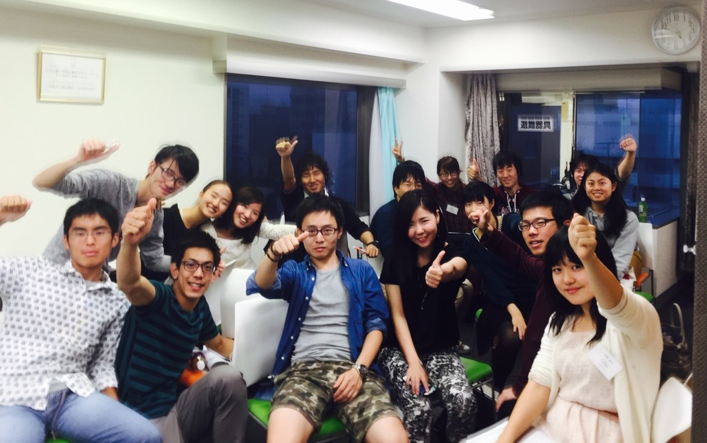

日中学生交流ネットワーク Japan China Student Network
○○○JCSN
【新着情報】
今年からスタートした、JCSNプログラムについての記事を更新しました。
【最近の活動情報】 ☛過去の活動
JCSN 上海・杭州交流会 第4回ミーティング
2014年10月13日

● 10月13日にJCSN第4回ミーティングが開催されました。
中国側での参加者の募集も始まり、来月は上海・杭州交流会になります。今回は主に各ディスカッショングループに分かれて当日のディスカッションの内容を決めたり、リサーチを行いました。
また、現地での視察や観光についても話しました。
☛詳細レポート
JCSN プログラム (株)フォルム様とのディスカッション
2014年10月11日

● 10月11日にJCSNプログラムが開催されました。
今回のJCSNプログラムでは、協賛いただいている株式会社フォルムの担当者の方から自社の製品に関する説明をしていただき、それに関するケーススタディをしました。
☛詳細レポート
JCSN 第二回 日中大学生×社会人交流プログラム
2014年9月6日

●9/6の第二回 日中大学生×社会人交流プログラムでは大手学習塾閉鎖の例を用いて分析を行なったり、浄水器のマーケティング方法に関して参加者の皆さんが各々考えてきてくれた意見を交換しました。
☛詳細レポート
JCSN(NPO日中交流推進機構）
〒111-0035
東京都台東区西浅草3-29-19
浙江建設ビル6階
TEL 03-5830-3087
FAX 03-5830-3089